New Senior School Biology Practical Activity & Work Book Two
Chapter
1
CLASSIFICATION OF PLANTS
Notable Concepts
Vascular plants
Non Vascular Plants
Angiosperms Gymnosperms
Agricultural classication
Life cycle based classification
fig1.1 Okra plant
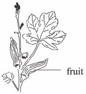
fig1.2: liver a Bryophytes
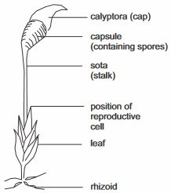
Background information
Plants can be classied based on the following criteria: Botanical classication; classication based on life cycle; Agricultural classication etc.
Botanical classication
In the taxonomy of living things (i.e. Science of biological classication), plants are divided into vascular and non vascular plants.
Non vascular plants are called thallophytes and bryophytes while vascular plants are called Tracheophytes.
Vascular plants
Vascular plants are plants that have system for conducting water and food from one part of the plant to the other. Vascular plants are the largest group of plants. It covers both owering plants (seed bearing plants) like orange, pawpaw, mango, maize etc and non owering plants (spore-bearing plants). Examples of non owering (spore bearing plants) are ferns, whisk ferns, club mosses etc. Flowering (seed producing) plants are called Spermatophytes.They are further divided into Angiosperms and Gymnosperms
Non Vascular Plants
Non vascular plants are plants that have no system for conducting water and food from one part of the plant to the other. Examples of Non Vascular Plants are Algae which belongs to the thallophytes; mosses and liverworts which belongs to the Bryophytes
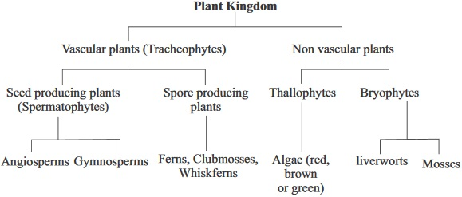
fig1.3: Spirogyra (green algae) a Thallophytes
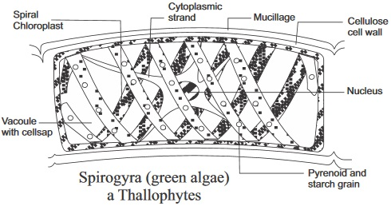
fig1.4: maize plant an anglosperm
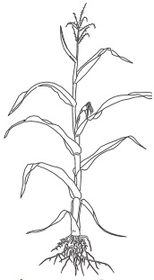
CLASSIFICATION BASED ON LIFE SPAN (Life cycle)
Plants can be classied based on different lengths of their life span. Based on this we have: Annuals: plants that live only one growing season within one year. Most annuals are herbaceous plants. Examples of annuals are tomatoes, beans, garden egg, melon, maize, rice, cowpea etc.Biennials:These ones live for two growing seasons within which they completes their life cycles. Examples of such plants are: turnip, carrots, beets, cabbage. Biennials can be either herbaceous or woody.
Perennials: These plants live for more that two growing seasons. Perennials can be woody or herbaceous, herbaceous perennials include bulbs such as onion and garlic; we also have rhizomes like ginger, cannalily. Woody perennials include palm trees, orange, mango etc.
CLASSIFICATION BASED ON AGRICULTURAL IMPORTANCE
Plants can be classied based on their agricultural importance. Plants of agricultural importance can be referred to as crops. Various crops can t under any of the following categories or classes: roots crops, vegetable crops, forage crops, fruits, beverages and drugs, spices, cereals/grain crops, ber crops, legumes, oil crops and cash crops.
General Questions
1. Write down four examples of non vascular plants
(i)Mango (ii) Pawpaw (iii) Palm tree (iv) Orange
(i) Ferns (ii) Club mosses (iii) Whisk ferns (iv) Conifers
(i) Green Algae (ii) Mosses (iii) Liverworts (iv) Brown Algae
2. What is the major difference between vascular plants and non vascular plants?
Presence of specialized tissues for conducting food and water in vascular plants none in non vascular plants
Presence of specialized tissues for conducting food and water in non vascular plants but none in vascular plants
Vascular plants have stem while non vascular plants have none
3. What is a Spermatophyte?
4. Write down ten examples of Spermatophyte
5. In the table below, tabulate the differences between Angiosperms and Gymnosperms
Angiosperm
Gymnosperm
1
2
3
6. Write down four examples of Gymnosperms
(i) Guava (ii) Pawpaw (iii) Maize (iv) melon
(i) Algae (ii) Ferns (iii) Club mosses (iv) whiskferns
(i) cycads (ii) Conifers (iii) Ginkgoes (iv) Ginetophytes
7. A fern is called Tracheophyte because
They have vascular tissues for conducting water and food
They have roots and stem
They bear seeds
but it is not a Spermatophyte because
It bears seeds
It does not bear seed
It bears flowers
8. Simple green plants with thread like (filamentous) or flat (thallus) bodies belong to the
9. Among the simple type of algae, the dominant plant is
10. Bryophtes show a distinct alternation of generation which are
generation and the
Generation
11. Group the following plants into monocotyledons and Dicotyledons (i)Maize (ii)beans (iii)mango (iv)rice (vi)orange (vii)palm tree (viii)Guinea grass (ix)pawpaw (x)yam
Monocotyledons
Dicotyledons
12. Compare monocotyledon and dicotyledon based on the following features as tabulated below
Seed leaf
Dicotyledons
Dicotyledons
Embryo
Leaves
Root Structure
Flowers
13. Biennial plants live for
growing season
14. Tomato plant is classied as an annual because it
Lives one growing season beyond a year
Lives one growing or its growing season within one year
Lives from one growing season to another within three years
15. Why is Ginger plant classied as a herbercious perennial?
Soft green (non woody) stem
woody stem
green slender wood
16. Group or classify the following plants listed below into Annuals, Biennials, and Perennials Coconut, Maize, Garlic, Onion, Cowpea, Pawpaw, Carrot, Cabbage, Melon
Annuals
Biennials
Perennials
1
2
3
Practical Activities
1.Classify the following plants into Cereals, Vegetables, Fruits, Legumes and Root Crops(i) Guinea corn,(ii) Orange(iii) Millet(iv) Wheat(v) Okro(vi) Onion (vii) Cassava(viii) Spinach(ix) Bean(x) Mango(xi) Maize(xii) Cowpea(xii) Yam(xiv) Sweet potato(xv) Pineaple(xvi) Groundnut
Cereals
Vegetables
Fruits
Legumes
Root crops
1
2
3
Practical Activities
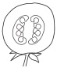
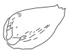
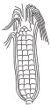
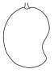
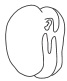
The following specimen Tomato, Mango, Beans, Palm fruit, and Maize are provided
1. Identify each of the specimen without giving reason
2.Classify each of the specimens based on
Dicotyledons and Monocotyledons
Annuals and Perennials
Cereals, legumes and vegetables
Use the table below for your answers
Dicotyledons
Monocotyledons
1
2
3
Annuals
Perennials
1
2
3
Cereal(s)
Legume(s)
Vegetable(s)
1
2
3
fig1.6: A and B
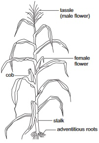
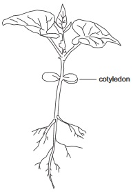
Among the plants above, identify
Which of these is a monocotyledon
Write down the name of the dicotyledon represented
Give one reason for your answers in (I) and (ii)
fig1.6: A - C
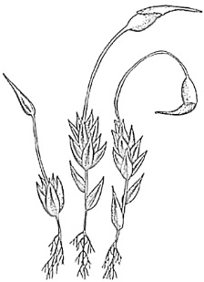
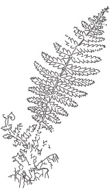
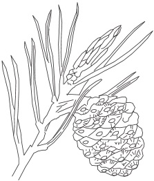
Identify a ferm, liverwort and a conifer in the diagrams above in g 1.7 A - C